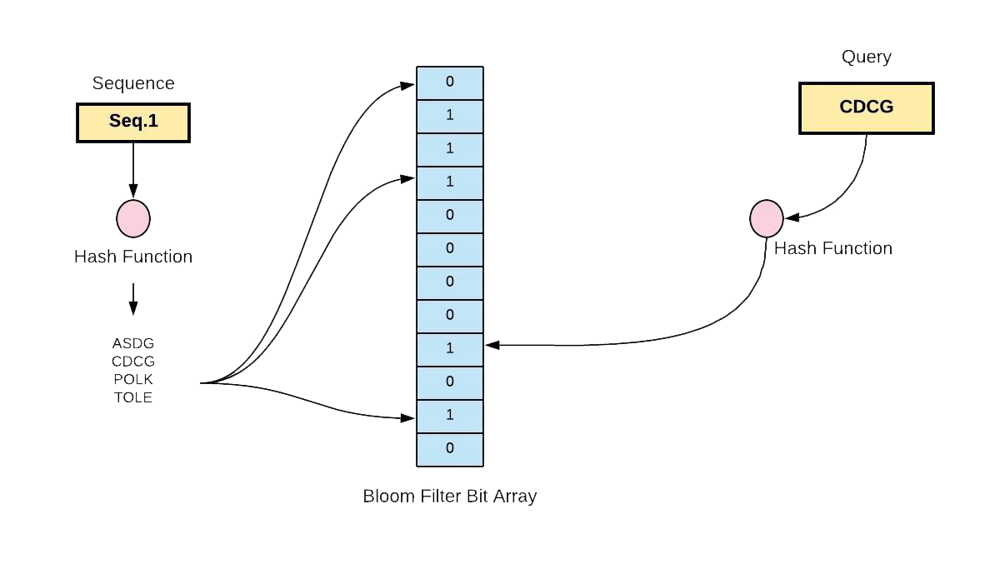
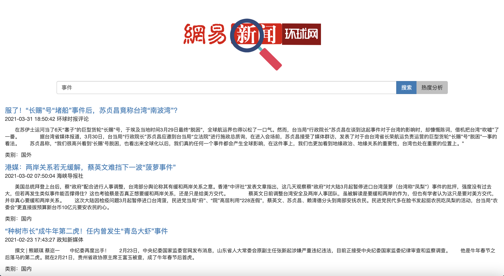
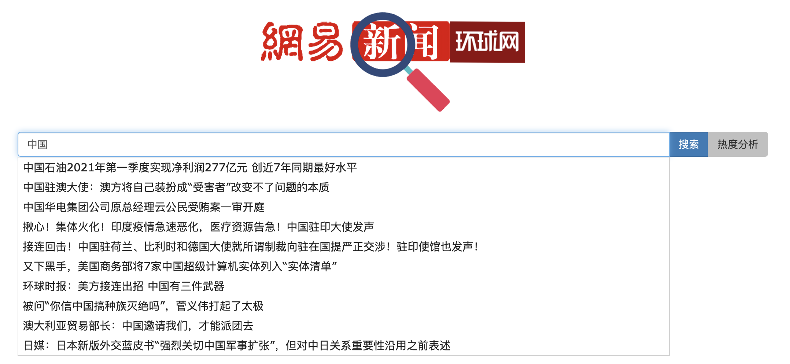
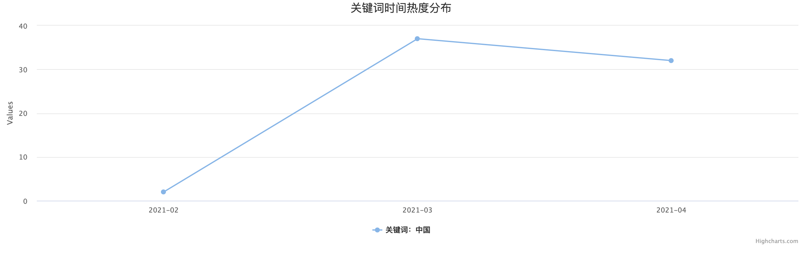

服务部署 请按照如下流程部署本项目：
在news_search 目录下安装所需的依赖插件：（国内请使用淘宝源安装nodejieba）
1 2 > npm install request iconv-lite cheerio mysql jschardet moment > npm install nodejieba --registry=https://registry.npm.taobao.org --nodejieba_binary_host_mirror=https://npm.taobao.org/mirrors/nodejieba
启动本地MySQL服务，修改news_search/mysql.js 中的相关信息为数据库登录信息：
1 2 3 4 5 6 var pool = mysql.createPool({ host: '#数据库地址' , user: '#本地数据库连接用户名' , password: '#本地数据库连接密码' , database: '#目标数据库名' });
登陆数据库管理系统，在控制台中设置相关变量以防止后续连接池堵塞：
1 2 3 > set global wait_timeout=10; > set global max_connections=5000; > set session wait_timeout=10;
在数据库管理系统中创建所需的表结构：
1 2 3 4 5 6 7 8 9 10 11 12 13 14 15 16 17 > CREATE TABLE `news` ( `id` INT NOT NULL AUTO_INCREMENT, `origin` TEXT NOT NULL, `category` TEXT NOT NULL, `title` TEXT NOT NULL, `time` TEXT, `source` TEXT, `abstract` TEXT, `content` TEXT, PRIMARY KEY (`id`) ); > CREATE TABLE `indices` ( `id` INT NOT NULL AUTO_INCREMENT, `word` TEXT, `docs` TEXT, PRIMARY KEY (`id`) );
执行爬虫脚本爬取新闻内容：
1 2 > node crawler.js > node create_indices.js
P.S: 在测试环境下，若希望快速得到效果，可打开news_research/crawler.js文件，并将如下行
改为
保存后再执行上述代码。
在news_site 目录下安装所需的依赖：（国内请使用淘宝源安装nodejieba）
1 2 > npm install express moment > npm install nodejieba --registry=https://registry.npm.taobao.org --nodejieba_binary_host_mirror=https://npm.taobao.org/mirrors/nodejieba
启动网站后端服务：
使用浏览器访问网站前端：
源内容抓取 新闻网站解析 网易新闻 网易新闻的主体分为国内和国际两个模块，其网站结构大体相同，因此我们集中针对这两个板块进行内容爬取。
分析新闻索引页面的HTML结构我们可以发现，新闻条目被放在了类名为newsdata_wrap 的div 标签下。然而由于网易新闻使用了动态加载新闻条目的方式，若我们使用GET请求直接获取页面的HTML时，该标签下的内容为空，因此我们无法直接通过解析网站的HTML数据获得具体的新闻信息。
继续分析访问网站时的文件传输流我们会发现网站的新闻条目是由一个叫cm_guonei.js （cm_guoji.js ）的文件动态装载的，其原始路径为https://temp.163.com/special/00804KVA/cm_guonei.js。跟踪页面我们发现同级目录下还有cm_guonei_02.js~cm_guonei_08.js （cm_guoji_02.js~cm_guoji_08.js ）共8个文件用于流式加载所有需要加载的新闻条目。打开文件发现其为一个类JSON结构，其中按条目存储了新闻页面的标题、网址、关键字、时间等基本信息。由此我们可以通过直接解析这些文件来获得所有需要爬取的新闻页面。
1 2 3 4 5 6 7 8 9 10 11 12 13 14 15 16 17 18 19 20 21 22 23 24 25 26 [ { "title" :"“港独”周竖峰出逃加拿大，曾辱骂内地生为“支那人”" , "digest" :"" , "docurl" :"https://www.163.com/news/article/G8GJUT8700019B3E.html" , "commenturl" :"https://comment.tie.163.com/G8GJUT8700019B3E.html" , "tienum" :5276 , "tlastid" :"<a href='http://news.163.com/'>新闻</a>" , "tlink" :"https://www.163.com/news/article/G8GJUT8700019B3E.html" , "label" :"其它" , "keywords" :[ {"akey_link" :"https://news.163.com/keywords/5/6/54687ad65cf0/1.html" ,"keyname" :"周竖峰" }, {"akey_link" :"https://news.163.com/keywords/6/2/6e2f72ec/1.html" ,"keyname" :"港独" }, {"akey_link" :"https://news.163.com/keywords/5/a/52a062ff5927/1.html" ,"keyname" :"加拿大" }], "time" :"04/26/2021 10:19:15" , "newstype" :"article" , "pics3" :[], "channelname" :"guonei" , "source" :"观察者网" , "point" :"60" , "imgurl" :"http://cms-bucket.ws.126.net/2021/0426/bc6435dep00qs5fri00kkc000s600e3c.png" , "add1" :"" , "add2" :"" , "add3" :"" } ]
接下来我们分析新闻内容页面。该页面的具体内容是静态加载的，因此我们可以直接对其HTML内容进行抽取。然而随着进一步的分析我们会发现新闻页面的编码并不统一，分为UTF-8和GBK两种。为了得到网站的编码方式，我们使用了一个名为jschardet 的插件。该插件可以通过分析文本的二进制编码给出其最可能的编码方法。由于目标网站只有两种编码方式，因此我们可以保证使用该插件检测得到的结果是可靠的。
分析页面的HTML结构我们可以发现新闻内容被封装在了类名为post_main 的div 标签下，其中新闻标题类名为post_title ，时间、来源的类名为post_info ，正文的类名为post_body 。我们首先使用iconv-lite 插件对页面进行解码，随后利用Cheerio 模块即可快速从网站的DOM结构中抽取出所需的内容。
1 2 3 4 5 6 7 8 9 10 11 12 13 14 15 16 17 18 19 20 21 var coding = chardet.detect(body)['encoding' ]var $ = cheerio.load(iconv.decode(body, coding).toString());var title = $('.post_title' ).text();if (title != '' ){ var body_text = "" ; if ($(".content.all-txt" ).length > 0 ){ body_text = $('.content.all-txt > p' ); } else if ($('.newscontents' ).length > 0 ){ body_text = $('.newscontents > p' ); } else { body_text = $('.post_body > p' ); } var content = "" ; body_text.each((index, item ) => { if ($(item).text() != "" ){ content = content + $(item).text() + '\n' ; } }); }
环球网 与网易新闻类似，环球网同样分为国内和国际两个模块，且采用了动态装载新闻条目的方式。通过追踪其文件传输流，我们发现其新闻源数据地址分别为https://china.huanqiu.com/api/list?offset=0&limit=20和https://world.huanqiu.com/api/list?offset=0&limit=20，其基本结构为：
1 2 3 4 5 6 7 8 9 10 11 12 13 14 15 16 17 18 19 20 21 22 23 24 25 26 27 28 29 30 31 32 { "list" :[ { "aid" :"42vOMMYVUm3" , "title" :"前国脚张恩华去世，享年48周岁" , "summary" :"张恩华的职业生涯大部分时间是在大连实德以及前身大连万达队度过的，是大连实德队主力后卫，也是大连夺得联赛“七冠王”和多次杯赛冠军的主要功臣之一" , "addltype" :"normal" , "typedata" :{ "audio" :{ "members" :[] }, "video" :{ "members" :[] }, "gallery" :{ "members" :[] } }, "source" :{ "url" :null , "name" :"环球时报" }, "ext_displaytime" :"" , "ext_defertime" :"" , "ctime" :"1619721799662" , "xtime" :"1619721799662" , "cover" :"" , "host" :"china.huanqiu.com" , "ext-serious" :"1" } ] }
环球网的新闻内容页根路径分别为https://china.huanqiu.com/article/和https://world.huanqiu.com/article/，因此我们只需使用该路径加上索引数据中的aid 号，即可得到新闻页的完整网址。
分析其新闻内容页的HTML结构我们可以发现其正文的外层包裹分别有一个类名为l-con clear 的div 标签，一个article 标签以及一个section 标签，于是我们同样可以使用Cheerio插件快速将其内容从结构中抽取出来：
1 2 3 4 5 6 7 8 9 10 11 12 13 14 15 16 var coding = chardet.detect(body)['encoding' ]var $ = cheerio.load(iconv.decode(body, coding).toString());var title = $('.t-container-title' ).text();if (title != '' ){ var body_text = "" if ($(".l-con.clear" ).length > 0 ){ body_text = $('.l-con.clear > article > section > p' ); var content = "" ; body_text.each((index, item ) => { if ($(item).text() != "" ){ var para = $(item).text(); content = content + para + '\n' ; } }); } }
数据库构建 提取出网站的内容后，我们需要将其以一定结构存放在一个可外部访问的空间内。为此，我们首先创建一个名为netease_news 的数据库：
1 CREATE DATABASE netease_news;
并在其中构建一张名为news 的表用于结构化存储新闻的各种信息。对于本项目，我们设计了8个表项，分别为：id（新闻的唯一标识符）、origin（新闻源网址）、category（分类：国内/国外）、title（标题）、time（创建时间）、source（来源）、abstract（内容摘要）、content（新闻内容） 。我们将id 设为主键，并设置其在每次插入时自增，这样在实际插入时我们只需插入其他7项即可，并能自动分配到一个唯一的id。
1 2 3 4 5 6 7 8 9 10 11 12 CREATE TABLE `news` ( `id` INT NOT NULL AUTO_INCREMENT, `origin` TEXT NOT NULL, `category` TEXT NOT NULL, `title` TEXT NOT NULL, `time` TEXT, `source` TEXT, `keyword` TEXT, `heat` INT, `content` TEXT, PRIMARY KEY (`id`) );
基本爬虫逻辑 根据上面的分析，我们可以快速设计出爬虫的基本逻辑，其基本流程如下：
在实际实现中，我们首先封装了一套mysql的读写工具：
1 2 3 4 5 6 7 8 9 10 11 12 13 14 15 16 17 18 19 20 21 22 23 24 25 26 27 28 29 30 31 32 33 var mysql = require ("mysql" );var pool = mysql.createPool({ host: '127.0.0.1' , user: 'root' , password: 'root' , database: 'netease_news' }); var query = function (sql, sqlparam, callback ) pool.getConnection(function (err, conn ) if (err) { callback(err, null , null ); } else { conn.query(sql, sqlparam, function (qerr, vals, fields ) conn.release(); callback(qerr, vals, fields); }); } }); }; var query_noparam = function (sql, callback ) pool.getConnection(function (err, conn ) if (err) { callback(err, null , null ); } else { conn.query(sql, function (qerr, vals, fields ) conn.release(); callback(qerr, vals, fields); }); } }); }; exports .query = query;exports .query_noparam = query_noparam;
对于爬虫任务，我们将其封装为了六个函数，其中traverseNeteaseIndices 用于遍历网易新闻的索引文件，phaseNeteaseLinkList 用于解析网易新闻列表，phaseNeteaseNews 用于解析网易新闻页的具体内容，另外三个函数traverseHQWIndices 、phaseHQWLinkList 和phaseHQWNews 用于获取环球网新闻数据时的对应行为（具体实现见crawler.js） 。
这里需要注意的是，由于request请求 和mysql操作 均为异步操作 ，程序执行的顺序无法确定，在同一时刻内，mysql服务器中可能同时有上千个连接，且当连接释放后，连接池不会立即关闭相应连接 ，这样就会造成连接池堵塞 。为解决这一问题，我们首先在数据库控制台中缩小闲置连接回收间隔，并增大连接限制数：
1 2 3 > set global wait_timeout=10; > set global max_connections=5000; > set session wait_timeout=10;
随后我们通过在爬虫逻辑中使用setTimeout 函数延迟发送数据库请求，将数据库操作任务平摊到多个时间戳上，这样就有效避免了连接池堵死的情况发生
1 2 3 4 5 6 7 8 9 10 11 12 13 for (var i = 1 ; i <= pages; i++){ setTimeout (function ( phaseNeteaseLinkList(url, category, i, pages); }, 3000 * (i - 1 )); } for (var i = 0 ; i <= pages; i++){ setTimeout (() => { phaseHQWLinkList(url, pred, category, i, pages, last_flag); }, 5000 * i); }
布隆过滤器与去重 当我们需要多次执行爬虫任务时，就可能会遇到重复爬取同一网站的情况。为此，我们需要一套快速判断是否已经爬取过一个网址的方法。通常情况下，我们可以使用以下两种办法做到这一点：
每次爬取一个页面前，在数据库中使用SELECT 命令查询该网址是否已经存在
对新闻网址建立哈希表 ，每次爬取前查询该表以判断网址是否已经存在
若使用第一种方法，根据不同数据库的存储及查询方法，其单次查询的时间复杂度在 和 之间， 次查询的时间复杂度最坏可能退化到 ；若使用第二种方法，尽管其单次查询的时间复杂度可以保证为 ，但对于一个含有 个网址的数据库，其空间复杂度为 。由此可见，随着爬虫规模的扩大，两种去重方法均有着一定的弊端，不利于任务的扩展。
为解决此问题，我们引入一种名为布隆过滤器（Bloom Filter） 的数据结构（见filter.js） 。布隆过滤器的核心思想为通过一串哈希函数将关键字映射到一个比特位串。查询时，先将目标关键字通过同样的哈希函数找到对应的索引位，若索引位存在映射，则表明目标关键字可能存在 ；若所有索引位均不存在映射，则表明目标关键字一定不存在 。

布隆过滤器是一种概率型数据结构，其误判率约为 。在实际使用场景下，只要当我们选择合适的 和 值，就可以让误判率几乎不影响业务逻辑。这可以由如下公式给出：
其中 为哈希函数的个数， 为位串长度， 为预期的误报率。
布隆过滤器增加和查询时间复杂度均为 （ 为哈希函数的个数），空间复杂度为 （ 为比特位长度），相比前两种方法可以很好的平衡存储空间和查询效率。
分词与倒排索引 当用户发起搜索请求时，我们需要从数据库中快速找出所有内容含有用户所请求关键字的新闻条目 。若使用全文搜索的方法，随着数据规模增大，会造成极大的延迟。为解决此问题，我们在爬取文章的时候，对文章内容进行分词 ，并使用词关键字对文章建立倒排索引 ，在搜索时，只需要将关键字使用同样的方法进行分词，并在倒排索引表中查询对应的文档编号即可。
为此，我们首先在数据库中再建立一张索引表：
1 2 3 4 5 6 CREATE TABLE `indices` ( `id` INT NOT NULL AUTO_INCREMENT, `word` TEXT, `docs` TEXT, PRIMARY KEY (`id`) );
随后我们读取news表中的新闻内容，并使用nodejieba 插件对其进行分词。由于文章中还有部分特殊符号及无意义词，我们通过一个停用词表 来将其去除。为保证词关键字的唯一性，我们维护一个集合 ，将每个文档分词后的结果依次插入该集合，并将结果插入数据库中：（见create_indices.js）
1 2 3 4 5 6 7 8 9 10 11 12 13 14 var word_set = new Set ();var para = item.content;var para_filtered = para.replace(" " , "" ).replace("\n" , "" ).replace(" " , "" );para_filtered = para_filtered.replace("，" , "" ).replace("。" , "" ).replace("," , "" ); var word_list = jieba.cut(para_filtered);for (var i = 0 ; i < word_list.length; i++){ word_set.add(word_list[i]); } word_set.forEach((word ) => { if (!stop_list.includes(word)){ } }
网站构建 基本构架 接下来我们来构建新闻搜索网站。新闻搜索网站的主要行为是提供一个可供用户输入的界面，当用户输入关键字后，系统从数据库中检索出带有用户所指定关键字的新闻条目，并将结果以一定的顺序生成相应的内容页面返回给用户。我们使用Express脚手架 来构建网站的后端。对于网站路由，我们共设计了4个入口，其中根目录为浏览器访问入口，用于呈现相应的HTML页面，其他三个入口/query 、/qcontent 和/qheat 分别用于前端请求关键字结果 、完整正文内容 及关键字热度分析结果 。
对于网站前端，我们使用了Bootstrap框架 来生成所需的样式。搜索引擎页面设计的一个核心宗旨即为简洁，因此在搜索界面，我们参考了百度和Google的设计样式，通过卡片的方式将目标条目呈现给用户。在一张卡片中，我们呈现了新闻条目的标题、事件、来源、摘要及类别 ，以方便用户初步预览新闻的大致内容。

由于卡片的内容是由后端返回的结果动态决定的，因此我们不能直接将其写死在HTML中，而需要通过Javascript脚本动态生成并将其添加至HTML的DOM结构中：（见public/index.html）
1 2 3 4 5 6 7 8 9 10 11 12 13 14 15 16 17 18 19 20 21 22 23 24 25 26 27 28 29 30 31 32 33 34 35 function appendCard (father, title, id, time, source, abstract, cat ) var card = document .createElement('div' ); card.class = 'card' ; var card_body = document .createElement('div' ); card_body.class = 'card-body' ; var card_link = document .createElement('a' ); card_link.class = 'card-link' ; card_link.innerText = title; card_link.style.fontSize = "large" ; card_body.appendChild(card_link); var card_info = document .createElement("p" ); if (source != null ){ card_info.innerText = time + " " + source; } else { card_info.innerText = time; } card_body.appendChild(card_info); var card_abstract = document .createElement("p" ); card_abstract.innerText = abstract; card_abstract.style.fontSize = "small" ; card_body.appendChild(card_abstract); var card_cat = document .createElement("p" ); if (cat == "domestic" ){ card_cat.innerText = "类别：国内" ; } else if (cat == "world" ){ card_cat.innerText = "类别：国外" ; } card_body.appendChild(card_cat); card.appendChild(card_body); var page_elem = document .getElementById('page-list' ); page_elem.appendChild(card); }
当用户点击一个条目后，将跳转到一个新的页面，页面将向后端请求该新闻条目的完整内容。我们可以通过URL含参跳转的方法来实现这一跳转请求操作：
1 2 3 4 5 6 function appendCard (father, title, id, time, source, abstract, cat ) card_link.href = '/content.html?id=' + id; }
1 2 3 4 5 6 7 8 9 10 11 function GetUrlParam (name ) var reg = new RegExp ("(^|&)" + name +"=([^&]*)(&|$)" ); var r = window .location.search.substr(1 ).match(reg); if (r!=null )return r[2 ]; return null ; } var id = GetUrlParam("id" );$.get("/qcontent?id=" + id, function (data ) });
对于内容的呈现，我们同样使用了动态方法将正文添加至页面上：（见public/content.html）
1 2 3 4 5 6 7 8 9 10 11 12 var title = document .createElement('h1' );title.align = "center" ; title.innerText = data.title; var info = document .createElement('h5' );info.style.color = "#808080" ; info.innerText = data.time + " 来源：" + data.source; var para = document .createElement('p' ); para.innerText = data.content; var page_elem = document .getElementById('news-content' );page_elem.appendChild(title); page_elem.appendChild(info); page_elem.appendChild(para);
搜索提示 在现代搜索引擎中，我们希望系统能够即时根据当前的输入智能推测用户想要搜索的完整内容。为实现这一功能，我们需要监听输入框的内容变化事件，并在每次这一事件发生时向后端发送搜索请求：（见public/index.html）
1 2 3 4 5 6 7 8 9 10 11 12 13 14 15 16 17 18 19 function search (callback, mode ) let keywords = $(":input[name='keywords']" ).val(); $.get("/query?keywords=" + keywords + "&mode=" + mode, callback); } function middleSearch ( search(function (data ) var recList = []; for (var i = 0 ; i < Math .min(10 , data.length); i++){ recList.push(data[i].title); } }, "middle" ); } $(":input[name='keywords']" ).on('input' , function ( middleSearch(); });
由于搜索提示要求即时响应，因此我们通过向后端传入一个mode 参数来决定搜索的响应精度和速度。对于提示用搜索请求（mode=middle） ，后端将只扫描数据库新闻标题（title） 列中含有目标关键字的条目，并只返回前10条结果。（事实上，若使用预训练的关键词关联库，我们可以引入更为智能的搜索提示，不过由于本项目为新闻搜索网站，这一功能并不实用）

对于前端，我们使用了JQuery-UI框架 实现了补全列表的界面。通过JQuery语句在搜索框后附加autocomplete 属性，即可使得列表中的内容随着用户的输入自动改变：（见public/index.html）
1 2 3 4 5 6 7 8 9 10 11 $(":input[name='keywords']" ).autocomplete({ source: function (query, response ) search(function (data ) var recList = []; for (var i = 0 ; i < Math .min(10 , data.length); i++){ recList.push(data[i].title); } return response(recList); }, "middle" ); } });
关键词热度分析 最后，我们来实现对用户的搜索关键词进行时间热度分析的逻辑。由于在爬虫过程中我们抓取了文章的创建时间，并对正文内容进行了倒排索引，我们可以快速实现这一功能。
与显示新闻正文时的逻辑类似，当用户选择热度分析后，页面将含参跳转到一个新的页面，并向后端的/qheat 入口请求热度分析结果。后端首先从news 和indices 表中分别找出包含目标关键词的新闻条目，并抽取出它们的时间信息。随后，我们按月份对其进行统计，并将其按时间排序，最终将结果封装为JSON字符串传回给前端：（见routes/index.js）
1 2 3 4 5 6 7 8 9 10 11 12 13 14 15 16 var seq = {};result.forEach((item ) => { if (seq.hasOwnProperty(item.time.slice(0 , 7 ))){ seq[item.time.slice(0 , 7 )] += 1 ; } else { seq[item.time.slice(0 , 7 )] = 1 ; } }); var sortedKeys = Object .keys(seq).sort();var seq_sort = {};sortedKeys.forEach((item ) => { seq_sort[item] = seq[item]; });
对于分析类功能，图表是一个较为直观的呈现形式。在这里我们使用了HighCharts 图表框架来根据后端返回的数据快速生成这一样式：
1 2 3 4 5 6 7 8 9 10 11 12 13 Highcharts.chart('chart' , { title: { text: "关键词时间热度分布" }, xAxis: { categories: Object .keys(data) }, series: [{ data: value_list, type: "line" , name: "关键词：" + sdecodeURI(keyword) }] });
最终的显示效果如下：
